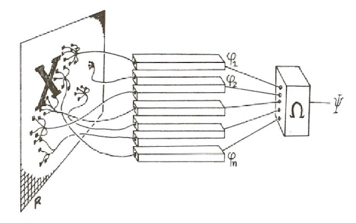
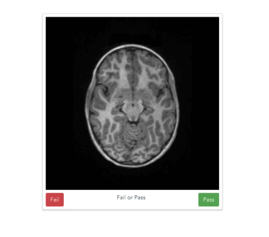
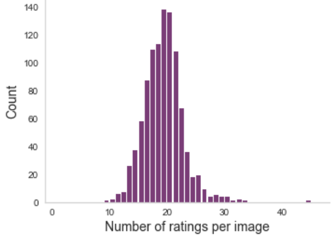
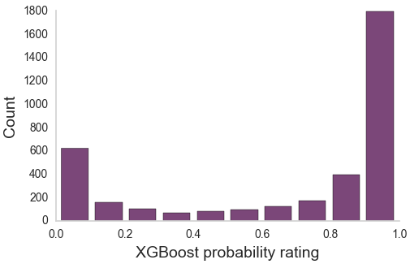

The era of brain observatories
Challenges and opportunities for computational neuroscience
October, 4th 2018
BRAIN Initiative Working Group 2.0 Workshop
Ariel Rokem, The University of Washington eScience Institute
Follow along at:


The era of brain observatories
Allen Institute for Brain Science
n=1200
n=~10,000
n=~10,000
n=500,000
Opportunities
New data sets will enable important new discoveries
New methods
Data-driven discovery
Challenges
Methods that work in standard use may not apply to large datasets
=> Train machine learning algorithms to replace expert decision making
Tools are needed for data exploration and transparent sharing of results
=> Build browser-based applications for exploratory data analysis and data sharing
Algorithms are needed to extract information from complex high-dimensional data
=> Translate statistical techniques into practice in neuroscience
Sociotechnical structures are strained: collaboration, publication, training
=> Open source software collaborations and science-focused hack weeks
Challenge: Methods that work in standard datasets may fail in Big Data
Some methods require expert examination
Time consuming, tedious
=> Do not scale well!
The solution
Expert => results
Expert => training data => machine learning => results
Learning to replace experts
Aaron Lee

Sa Xiao

Parmita
Mehta
Magda
Balazinska
The UW OCT/EMR data-base
10 years (2006-2016)
9,285 patients
43,328 OCT volumes
2.64 million OCT images
2.5 TB of data
Linked to
For each OCT we know:
Visual acuity
OCT interpretation
Diagnosis
Treatment determinations
In some cases - longitudinal measurements
Artificial neural networks
A family of machine learning algorithms
Biologically inspired
Artificial neural networks
Artificial neural networks
A family of machine learning algorithms
Biologically inspired
Implement a cascade of linear/non-linear operations

Convolutional networks
Capitalize on spatial correlations in images
Inspired by the mammalian visual system


Deep learning accurately classifies age-related macular degeneration (AMD)

Patient-level AUC = 0.97
Solving multi-class multi-label problems
Binary classification doesn't model clinical decision making
Patients can have any of a several diseases
Or more than one disease
=> Train several networks and integrate across them
Augmenting the neural network with additional patient information

Detecting clinical features: intraretinal fluid segmentation
Detecting clinical features: intraretinal fluid segmentation
Detecting clinical features: intraretinal fluid segmentation
Detecting clinical features: intraretinal fluid segmentation
Segmenting experimental data:
oxygen induced retinopathy
Retinal segmentation
Segmenting experimental data:
oxygen induced retinopathy
The vaso-obliteration zone
Segmenting experimental data:
oxygen induced retinopathy
The neovascular tufts
The solution
Expert => results
Expert => training data => machine learning => results
But: for many tasks, not enough training data
=> Amplify labeled data-sets with citizen science
Expert => citizen science => training data => machine learning => results
Scaling expertise with citizen science

Anisha Keshavan

Jason Yeatman
Example
Quality control of T1-weighted images
https://braindr.us
Braindr
Are you at work but feel like playing Tinder? Why not play braindr (https://t.co/yXw191Q7Hy) instead, and help neuroscientists rate the quality of brain images? Swipe left to fail bad quality images! Built with @vuejs and @Firebase #citizenscience pic.twitter.com/tpI9Y3UKOb
— anisha (@akeshavan_) February 7, 2018
Multiple ratings per image
But often, no agreement

Aggregating across raters
XGBoost (Chen & Guestrin, 2016)
Aggregating across raters
Aggregating across raters
Aggregating across raters

How do we scale this up?
Scaling expertise using citizen scientist ratings
Scaling expertise using citizen scientist ratings

Summary
When there is enough training data: deep learning
When we need to scale up: citizen scientists
Model of expertise (random forest) for aggregation
Model of perception (neural network) for automation and scaling
Future applications
Other tasks
Tumor segmentation in MRI
Other types of data and other procedures
Challenges
Methods that work in standard use may not apply to large datasets
=> Train machine learning algorithms to replace expert decision making
Tools are needed for data exploration and transparent sharing of results
=> Build browser-based applications for exploratory data analysis and data sharing
Challenge: tools for exploration of complex data
Results from large datasets are hard to understand
Hard to communicate
Hard to reproduce
Data sharing is not incentivized and is not easy enough
Normal behavior is supported by brain connectivity

Catani and ffytche (2015)
Not just passive cables
Brain connections develop and mature with age
Individual differences account for differences in behaviour
Adapt and change with learning
Diffusion MRI
Diffusion MRI
Diffusion MRI
Diffusion statistics


Amyotrophic Lateral Sclerosis (ALS)

Classify patients based on the tissue properties in this part of the brain
Random Forest algorithm => 80% accuracy
How could we improve on this?
If we can't get the data?Challenge: improved data exploration and data sharing
Jason Yeatman

Adam
Richie-Halford

Josh Smith
Anisha
Keshavan
The solution
A web-based application
Builds a web-site for a diffusion MRI dataset
Automatically uploads the website to Github
https://yeatmanlab.github.io/Sarica_2017
Exploratory data analysis
Enhances published results
Linked visualizations facilitate easy exploration
Enables new discoveries in old datasets
Automatic data sharing
Further exploration
Summary
Exploratory data analysis
Automated data sharing
Dimensionality reduced data in tidy table format
Future applications
Other analysis pipelines
Dimensionality reduction in multi-channel neural recordings
Challenges
Methods that work in standard use may not apply to large datasets
=> Train machine learning algorithms to replace expert decision making
Tools are needed for data exploration and transparent sharing of results
=> Build browser-based applications for exploratory data analysis and data sharing
Algorithms are needed to extract information from complex high-dimensional data
=> Translate statistical techniques into practice in neuroscience
Opportunity: data-driven discovery
Adam Richie-Halford

Noah Simon
Jason Yeatman
Diffusion MRI data has group structure

Logistic regression

But in our case p (number of variables) >> n (number of subjects)
The Lasso
Enforces sparsity
But ignores group structure in the data
Accuracy: ~71% (AUC: ~71%)
Does not discover the right features
Top 10 features include some CST, but also other parts of the brain
The Group Lasso

Where l are groups of variables
p(l) is the number of variables in group l
In our case: all the measurements of a tissue propetry within a tract
Enforces selection of groups
But does not enforce L1 sparsity within included groups
Sparse Group Lasso

Enforces sparsity both at the group level and the within-group level
Subsumes the Lasso (λ1 = 0)
And the Group Lasso (λ2 = 0)
But more meta-parameters
Fitting meta-parameters
Nested cross-validation
Fitting meta-parameters
Nested cross-validation
Fitting meta-parameters
Nested cross-validation
Accurate classification and feature detection

Classification accuracy of ~84% (AUC of 0.9)
Top 10 features selected include CST
Summary
Sparse Group Lasso accurately discovers structure in dMRI data
Classification of disease states
In a regression setting, prediction of continuous measures
(e.g, "brain age", IQ, reading skills)
Future applications
Multi-region, multi-neuron recordings
Neurons => features
Brain regions => groups
Trials => observations
Multi-neuron recordings also have group structure
Challenges
Methods that work in standard use may not apply to large datasets
=> Train machine learning algorithms to replace expert decision making
Tools are needed for data exploration and transparent sharing of results
=> Build browser-based applications for exploratory data analysis and data sharing
Algorithms are needed to extract information from complex high-dimensional data
=> Translate statistical techniques into practice in neuroscience
Sociotechnical structures are strained: collaboration, publication, training
=> Open source software collaborations and science-focused hack weeks
Open source software is a necessary complement to brain observatories
Required for reproducibility
Enables building on previous work
https://github.com/uw-biomedical-ml/irf-segmenter
https://github.com/uw-biomedicasl-ml/oir
Braindr:
https://github.com/akeshavan/braindr-analysis
AFQ-Browser:
https://github.com/yeatmanlab/pyAFQ
https://github.com/yeatmanlab/AFQ-Browser
Sparse Group Lasso:
https://github.com/richford/AFQ-Insight
Open source diffusion MRI
Comprehensive
Thoroughly tested
Well-documented
Open to users
Open to contributors

Distributed collaboration

Challenge: training
Methods in data science are rapidly changing
Learning often require substantial hands-on experience
=> Hack weeks
Week-long events
Combination of learning and project work
Participant driven
Astrohackweek
Neurohackweek
Geohackweek
A fine balance of pedagogy and hacking

Neurohackademy
A Summer Institute in Neuroscience and Data Science (=> 2021)
Thanks!
Aaron Lee
Parmita Mehta
Magda Balazinska
Jason Yeatman
Adam Richie-Halford
Josh Smith
Anisha Keshavan
Noah Simon
Eleftherios Garyfallidis (IU)
Tal Yarkoni (UT Austin)
Daniela Huppenkothen
Anthony Arendt

Contact information